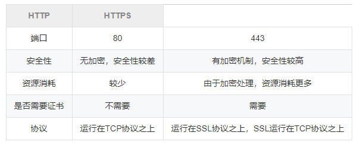
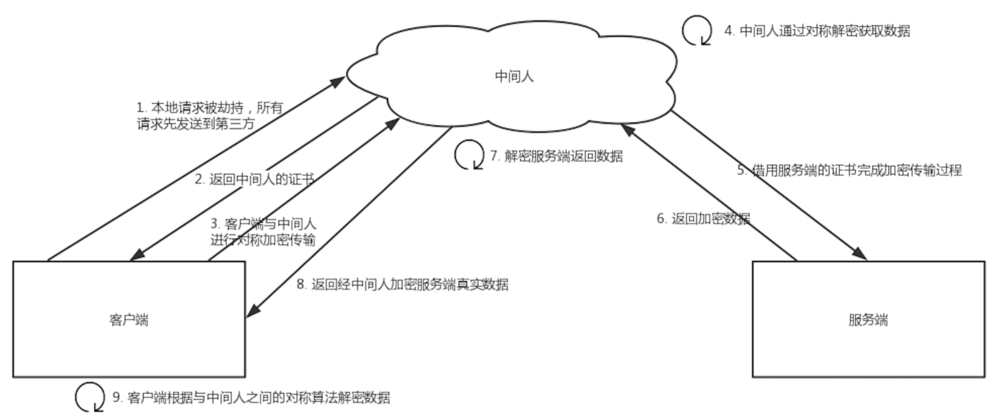
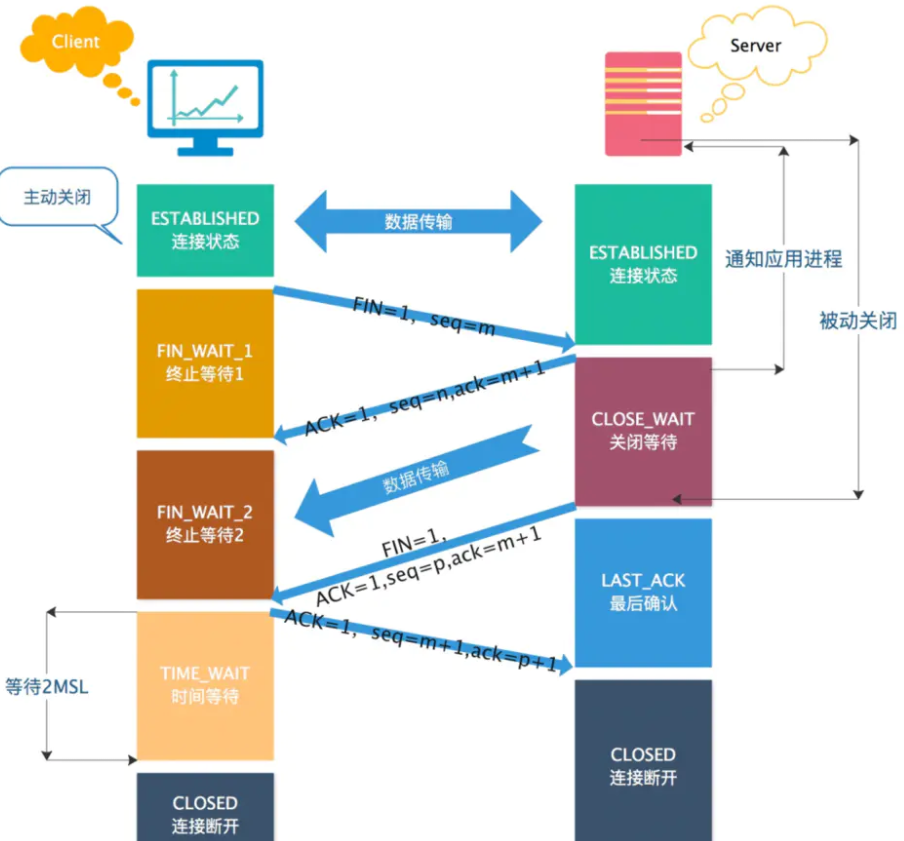
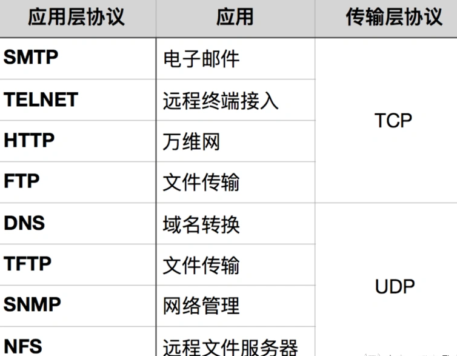
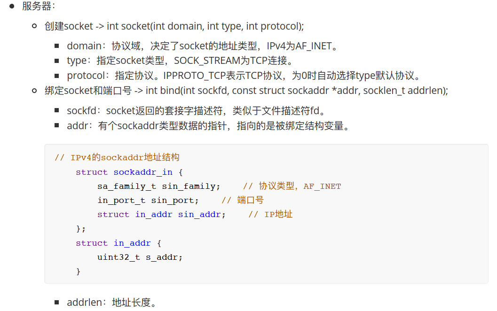
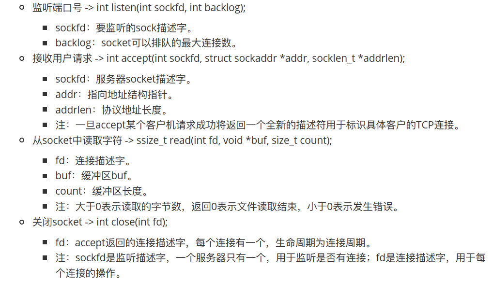
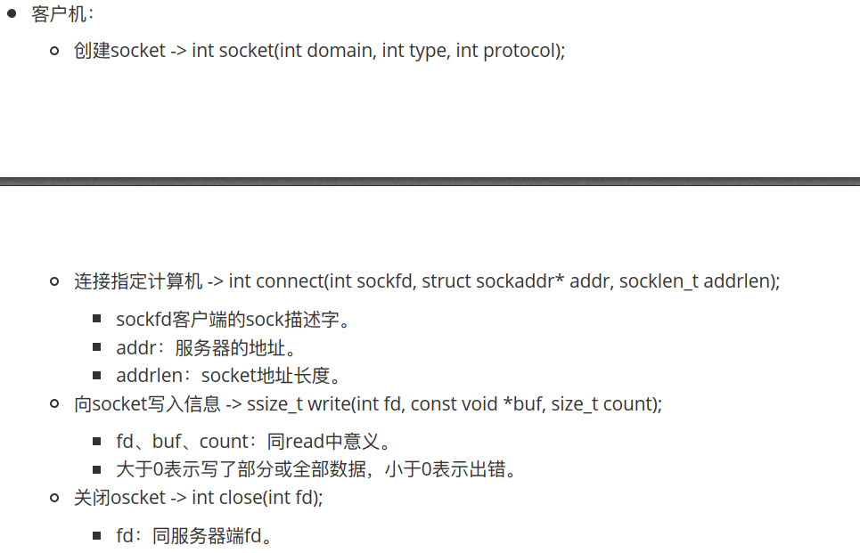
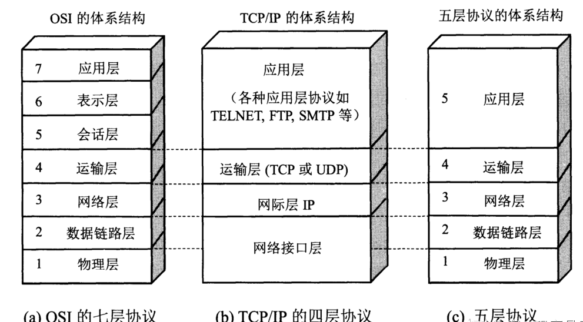

计算机网络
- HTTP篇
- TCP篇
- 1、TCP三次握手和四次挥手
- 2、TCP和UDP的区别
- 3、假设客户端和服务器通过TCP通信，这时客户端突然断电，服务器是如何关闭这个连接的？
- 4、浏览器输入URL到显示网页，发生了什么？
- 5、拥塞控制和流量控制
- 6、TCP协议报文的字段有哪些？它们的作用？
- 7、UDP怎么实现可靠传输
- 8、TCP定时器有哪些
- 9、TCP、UDP对应的应用场景
- 10、为什么客户端的 TIME-WAIT 状态必须等待 2MSL ？
- 11、TIME-WAIT 状态过多会产生什么后果？怎样处理？
- 12、TIME_WAIT 是服务器端的状态?还是客户端的状态?
- 13、TCP协议如何保证可靠性？
- 14、TCP socket交互流程
- 15、粘包拆包
- 其他
HTTP篇
1、HTTP和HTTPS的区别，HTTPS握手的过程

握手过程：
- Client给出协议版本号、一个客户端生成的随机数（Client random），以及客户端支持的加密方法。
- Server确认双方使用的加密方法，并给出数字证书、以及一个服务器生成的随机数（Server random）。
- Client确认数字证书有效，然后生成一个新的随机数（Premaster secret），并使用数字证书中的公钥，加密这个随机数，发给Server。
- Server使用自己的私钥，获取Client发来的随机数（Premaster secret）。
- Client和Server根据约定的加密方法，使用前面的三个随机数，生成”对话密钥”（session key），用来加密接下来的整个对话过程。
2、证书可靠性
在说校验数字证书是否可信的过程前，我们先来看看数字证书是什么，一个数字证书通常包含了：
- 公钥；
- 持有者信息；
- 证书认证机构（CA）的信息；
- CA 对这份文件的数字签名及使用的算法；
- 证书有效期；
- 还有一些其他额外信息；
CA签发证书的流程：
- 首先 CA 会把持有者的公钥、用途、颁发者、有效时间等信息打成一个包，然后对这些信息进行 Hash 计算，得到一个 Hash 值；
- 然后 CA 会使用自己的私钥将该 Hash 值加密，生成 Certificate Signature，也就是 CA 对证书做了签名；
- 最后将 Certificate Signature 添加在文件证书上，形成数字证书；
客户端校验服务端的数字证书的过程：
- 首先客户端会使用同样的 Hash 算法获取该证书的 Hash 值 H1；
- 通常浏览器和操作系统中集成了 CA 的公钥信息，浏览器收到证书后可以使用 CA 的公钥解密 Certificate Signature 内容，得到一个 Hash 值 H2 ；
- 最后比较 H1 和 H2，如果值相同，则为可信赖的证书，否则则认为证书不可信。
浏览器如何验证证书的合法性？
浏览器发起HTTPS请求时，服务器会返回网站的SSL证书，浏览器需要对证书做以下验证：
- 验证域名、有效期等信息是否正确。证书上都有包含这些信息，比较容易完成验证；
- 判断证书来源是否合法。每份签发证书都可以根据验证链查找到对应的根证书，操作系统、浏览器会在本地存储权威机构的根证书，利用本地根证书可以对对应机构签发证书完成来源验证；
- 判断证书是否被篡改。需要与CA服务器进行校验；
- 判断证书是否已吊销。通过CRL（Certificate Revocation List 证书注销列表）和 OCSP（Online Certificate Status Protocol 在线证书状态协议）实现，其中 OCSP 可用于第3步中以减少与CA服务器的交互，提高验证效率。
3、HTTP1.0、HTTP1.1 和 HTTP2.0 的区别
HTTP1.0和HTTP1.1的区别?
- 长连接：HTTP 1.1支持长连接（Persistent Connection）和请求的流水线（Pipelining）处理，在一个TCP连接上可以传送多个HTTP请求和响应，减少了建立和关闭连接的消耗和延迟，在HTTP1.1中默认开启
Connection： keep-alive，一定程度上弥补了HTTP1.0每次请求都要创建连接的缺点。 - 缓存处理：在HTTP1.0中主要使用header里的If-Modified-Since,Expires来做为缓存判断的标准，HTTP1.1则引入了更多的缓存控制策略，可供选择的缓存头来控制缓存策略。
- 带宽优化及网络连接的使用：HTTP1.0中，存在一些浪费带宽的现象，例如客户端只是需要某个对象的一部分，而服务器却将整个对象送过来了，并且不支持断点续传功能，HTTP1.1则在请求头引入了range头域，它允许只请求资源的某个部分，即返回码是206（Partial Content），这样就方便了开发者自由的选择以便于充分利用带宽和连接。
- 错误通知的管理：在HTTP1.1中新增了24个错误状态响应码，如409（Conflict）表示请求的资源与资源的当前状态发生冲突；410（Gone）表示服务器上的某个资源被永久性的删除。
- Host头处理：在HTTP1.0中认为每台服务器都绑定一个唯一的IP地址，因此，请求消息中的URL并没有传递主机名（hostname）。但随着虚拟主机技术的发展，在一台物理服务器上可以存在多个虚拟主机（Multi-homed Web Servers），并且它们共享一个IP地址。HTTP1.1的请求消息和响应消息都应支持Host头域，且请求消息中如果没有Host头域会报告一个错误（400 Bad Request）。
HTTP2.0相比HTTP1.1支持的特性：
- 新的二进制格式：HTTP1.1的解析是基于文本。基于文本协议的格式解析存在天然缺陷，文本的表现形式有多样性，要做到健壮性考虑的场景必然很多，二进制则不同，只认0和1的组合。基于这种考虑HTTP2.0的协议解析决定采用二进制格式，实现方便且健壮。
- 多路复用，即连接共享，即每一个request都是用作连接共享机制的。一个request对应一个id，这样一个连接上可以有多个request，每个连接的request可以随机的混杂在一起，接收方可以根据request的 id将request再归属到各自不同的服务端请求里面。
- 头部压缩，HTTP1.1的头部（header）带有大量信息，而且每次都要重复发送；HTTP2.0使用encoder来减少需要传输的header大小，通讯双方各自cache一份header fields表，既避免了重复header的传输，又减小了需要传输的大小。
- 服务端推送：服务器除了对最初请求的响应外，服务器还可以额外的向客户端推送资源，而无需客户端明确的请求。
4、http的长连接是什么策略，长连接会一直保持着吗？
在HTTP/1.0中默认使用短连接。也就是说，客户端和服务器每进行一次HTTP操作，就建立一次连接，任务结束就中断连接。当客户端浏览器访问的某个HTML或其他类型的Web页中包含有其他的Web资源（如JavaScript文件、图像文件、CSS文件等），每遇到这样一个Web资源，浏览器就会重新建立一个HTTP会话。
而从HTTP/1.1起，默认使用长连接。用以保持连接特性。使用长连接的HTTP协议，会在响应头加入这行代码：
Connection:keep-alive
在使用长连接的情况下，当一个网页打开完成后，客户端和服务器之间用于传输HTTP数据的TCP连接不会关闭，客户端再次访问这个服务器时，会继续使用这一条已经建立的连接。Keep-Alive不会永久保持连接，它有一个保持时间，可以在不同的服务器软件（如Apache）中设定这个时间。实现长连接需要客户端和服务端都支持长连接。
HTTP协议的长连接和短连接，实质上是TCP协议的长连接和短连接。
5、cookie和session
Cookie
HTTP Cookie（也叫 Web Cookie或浏览器 Cookie）是服务器发送到用户浏览器并保存在本地的一小块数据，它会在浏览器下次向同一服务器再发起请求时被携带并发送到服务器上。通常，它用于告知服务端两个请求是否来自同一浏览器，如保持用户的登录状态。Cookie 使基于无状态的 HTTP 协议记录稳定的状态信息成为了可能。
- 浏览器第一次发送请求到服务器端。
- 服务器端会创建cookie，该cookie中包含着用户的登录信息，再将cookie响应到客户端浏览器。
- 当用户再次访问时，服务器端会将之前创建的cookie响应到客户端
- 服务器端可以通过cookie来区分不同的用户
Session
Session 代表着服务器和客户一次会话的过程。Session 对象存储特定用户会话所需的属性及配置信息。这样，当用户在应用程序的 Web 页之间跳转时，存储在 Session 对象中的变量将不会丢失，而是在整个用户会话中一直存在下去。当客户端关闭会话，或者 Session 超时失效时会话结束。
- 当浏览器第一次发送请求到服务器端，服务器端会创建一个Session对象，Session对象会分配一个sessionld ，同时也会创建一个特殊的Cookie对象，会以set-Cookie的方式将id传回浏览器，浏览器保存起来。
- 当浏览器再不关闭的情况下，浏览器端发送第二次及以上的请求到服务器端,浏览器端访问服务器端时就会携带该name为JSESSIONID的Cookie对象，服务器端会将ame为JSESSIONID的Cookie对象取服务器端查询，以便来区分用户。
Cookie和Session的区别是什么？
- 作用范围不同，Cookie 保存在客户端（浏览器），Session 保存在服务器端。
- 存取方式的不同，Cookie 只能保存 ASCII，Session 可以存任意数据类型，一般情况下我们可以在 Session 中保持一些常用变量信息，比如说 UserId 等。
- 有效期不同，Cookie 可设置为长时间保持，比如我们经常使用的默认登录功能，Session 一般失效时间较短，客户端关闭或者 Session 超时都会失效。
- 隐私策略不同，Cookie 存储在客户端，比较容易遭到不法获取，早期有人将用户的登录名和密码存储在 Cookie 中导致信息被窃取；Session 存储在服务端，安全性相对 Cookie 要好一些。
- 存储大小不同， 单个 Cookie 保存的数据不能超过 4K，Session 可存储数据远高于 Cookie。
Cookie 和 Session 是如何配合的呢？
用户第一次请求服务器的时候，服务器根据用户提交的相关信息，创建对应的 Session ，请求返回时将此 Session 的唯一标识信息 SessionID 返回给浏览器，浏览器接收到服务器返回的 SessionID 信息后，会将此信息存入到 Cookie 中，同时 Cookie 记录此 SessionID 属于哪个域名。
当用户第二次访问服务器的时候，请求会自动判断此域名下是否存在 Cookie 信息，如果存在自动将 Cookie 信息也发送给服务端，服务端会从 Cookie 中获取 SessionID，再根据 SessionID 查找对应的 Session 信息，如果没有找到说明用户没有登录或者登录失效，如果找到 Session 证明用户已经登录可执行后面操作。
根据以上流程可知，SessionID 是连接 Cookie 和 Session 的一道桥梁，大部分系统也是根据此原理来验证用户登录状态。
分布式Session
在互联网公司为了可以支撑更大的流量，后端往往需要多台服务器共同来支撑前端用户请求，那如果用户在 A 服务器登录了，第二次请求跑到服务 B 就会出现登录失效问题。
分布式 Session 一般会有以下几种解决方案：
- 客户端存储：直接将信息存储在cookie中，cookie是存储在客户端上的一小段数据，客户端通过http协议和服务器进行cookie交互，通常用来存储一些不敏感信息
- Nginx ip_hash 策略：服务端使用 Nginx 代理，每个请求按访问 IP 的 hash 分配，这样来自同一 IP 固定访问一个后台服务器，避免了在服务器 A 创建 Session，第二次分发到服务器 B 的现象。
- Session 复制：任何一个服务器上的 Session 发生改变（增删改），该节点会把这个 Session 的所有内容序列化，然后广播给所有其它节点。
- 共享 Session：服务端无状态话，将用户的 Session 等信息使用缓存中间件（如Redis）来统一管理，保障分发到每一个服务器的响应结果都一致。
建议采用共享 Session的方案。
6、中间人攻击
中间人攻击是指攻击者与通讯的两端分别创建独立的联系，并交换其所收到的数据，使通讯的两端认为他们正在通过一个私密的连接与对方直接对话，但事实上整个会话都被攻击者完全控制。

过程原理：
- 本地请求被劫持（如DNS劫持等），所有请求均发送到中间人的服务器
- 中间人服务器返回中间人自己的证书
- 客户端创建随机数，通过中间人证书的公钥对随机数加密后传送给中间人，然后凭随机数构造对称加密对传输内容进行加密传输
- 中间人因为拥有客户端的随机数，可以通过对称加密算法进行内容解密
- 中间人以客户端的请求内容再向正规网站发起请求
- 因为中间人与服务器的通信过程是合法的，正规网站通过建立的安全通道返回加密后的数据
- 中间人凭借与正规网站建立的对称加密算法对内容进行解密
- 中间人通过与客户端建立的对称加密算法对正规内容返回的数据进行加密传输
- 客户端通过与中间人建立的对称加密算法对返回结果数据进行解密
由于缺少对证书的验证，所以客户端虽然发起的是 HTTPS 请求，但客户端完全不知道自己的网络已被拦截，传输内容被中间人全部窃取。
浏览器如何确定公钥的合法性？
- 在接收数字证书时，查看证书的有效期
- 根据数字证书的第三方机构名称，找到对应的公钥，解密数字签字，得到hash1
- 根据服务端网址等信息，使用签名算法，生成hash2
- 如果hash1等于hash2，则公钥合法
7、HTTP请求由哪几部分组成，常用请求
请求行
请求报文的起始行，或称为请求行，包含了一个方法和一个请求URL，这个方法描述了服务器应该执行的操作，请求URL描述了要对哪个资源执行这个方法。请求行中还包含HTTP 的版本，用来告知服务器，客户端使用的是哪种HTTP。所有这些字段都由空格符分隔。
例如：POST /infoNewsAction_uploadxheditorfile.action?immediate=1 HTTP/1.1
首部
每个HTTP 首部都有一种简单的语法：名字后面跟着冒号（：），然后跟上可选的空格，再跟上字段值，最后是一个CRLF。（或者换行符）
例如：Date:Tue,3Oct 1997 02:16:03 GMT Content-Type: image/gif Content-Length: 8572 Accept: image/gif, image/jpeg, text/html
请求数据
post方法中，会把数据以key value形式发送请求
常用请求
| 方法 | 作用 |
|---|---|
| GET | 获取资源 |
| POST | 传输实体主体 |
| PUT | 上传文件 |
| DELETE | 删除文件 |
| HEAD | 和GET方法类似，但只返回报文首部，不返回报文实体主体部分 |
| PATCH | 对资源进行部分修改 |
| OPTIONS | 查询指定的URL支持的方法 |
| CONNECT | 要求用隧道协议连接代理 |
| TRACE | 服务器会将通信路径返回给客户端 |
为了方便记忆，可以将PUT、DELETE、POST、GET理解为客户端对服务端的增删改查。
- PUT：上传文件，向服务器添加数据，可以看作增
- DELETE：删除文件
- POST：传输数据，向服务器提交数据，对服务器数据进行更新。
- GET：获取资源，查询服务器资源
响应报文：
- 状态行（版本+状态码+原因短语）
- 响应首部
- 空行
- 响应主体
8、GET和POST的区别
表达的语义不一样，决定了服务器对其做不同的处理。
GET有如下特点：
- 请求不应该带有请求体，服务器应该忽略/丢弃GET请求的请求体。
- 语义上，用于读取资源。
- GET请求不具有副作用。
根据HTTP规范，GET用于信息获取，而且应该是安全和幂等的。安全指的是非修改信息，即该操作用于获取信息而非修改信息。幂等性指的是无论调用多少次，都不会有不同的结果。
POST有如下特点：
- POST接口不需要具有幂等性
- 语义上用于改写/新建资源
仅用于POST请求 在以下情况只能用POST请求
-
无法使用缓存文件；
-
向服务器发送大量数据；
-
发送包含未知字符的用户输入时，post比get更稳定也更可靠
建议使用get方法的情况：
- get方式的安全性较Post方式要差些，包含机密信息的话，建议用Post数据提交方式
- 在做数据查询时，建议用Get方式；而在做数据添加、修改或删除时，建议用Post方式；
9、状态码301和302的区别是什么？常见状态码
共同点：301和302状态码都表示重定向，就是说浏览器在拿到服务器返回的这个状态码后会自动跳转到一个新的URL地址，这个地址可以从响应的Location首部中获取（用户看到的效果就是他输入的地址A瞬间变成了另一个地址B）。
不同点：301表示旧地址A的资源已经被永久地移除了(这个资源不可访问了)，搜索引擎在抓取新内容的同时也将旧的网址交换为重定向之后的网址；302表示旧地址A的资源还在（仍然可以访问），这个重定向只是临时地从旧地址A跳转到地址B，搜索引擎会抓取新的内容而保存旧的网址。 SEO中302好于301。
补充，重定向原因：
- 网站调整（如改变网页目录结构）；
- 网页被移到一个新地址；
- 网页扩展名改变(如应用需要把.php改成.Html或.shtml)。
常见状态码
2XX 成功
- 200 服务器成功返回网页
- 204 NO CONTENT，请求成功响应，没有资源返回
3XX 重定向
- 301 Move permanently 永久性重定向，表示请求的资源已被分配了新的URI，搜索引擎在抓取新内容的同时也将旧的网址替换为重定向之后的网址。
- 302 found 临时性重定向，搜索引擎会抓取新的内容而保留旧的网址。因为服务器返回302代码，搜索引擎认为新的网址只是暂时的。
- 304 未修改，自从上次请求后，请求的网页未修改过。服务器返回此响应时，不会返回网页内容，进而节省带宽和开销。
- 307 Temporary Redirect 临时的重定向，该响应代码与302重定向有所区别的地方在于，收到307响应码后，客户端应保持请求方法不变向新的地址发出请求
4XX 客户端错误
- 400 bad request ，表示请求报文中存在语法错误
- 403 forbidden ，表明对请求资源的访问被服务器拒绝了
- 404 not found
- 405 Method Not Allowed，客户端请求中的方法被禁止
5XX 服务器错误
- 500 internal Server error ，表示服务器端在执行请求时发生了错误
- 502 Bad Gateway，作为网关或者代理工作的服务器尝试执行请求时，从远程服务器接收到了一个无效的响应
- 503 service unavailable ，服务器超时，服务器超负载或正在进行停机维护
- 504 Gateway Timeout 表示扮演网关或者代理的服务器无法在规定的时间内获得想要的响应
10. HTTPS 的优缺点
优点：
安全性： - 使用HTTPS协议可认证用户和服务器，确保数据发送到正确的客户机和服务器； - HTTPS协议是由SSL+HTTP协议构建的可进行加密传输、身份认证的网络协议，要比http协议安全，可防止数据在传输过程中不被窃取、改变，确保数据的完整性。 - HTTPS是现行架构下最安全的解决方案，虽然不是绝对安全，但它大幅增加了中间人攻击的成本。
缺点：
- 在相同网络环境中，HTTPS 相比 HTTP 无论是响应时间还是耗电量都有大幅度上升。
- HTTPS 的安全是有范围的，在黑客攻击、服务器劫持等情况下几乎起不到作用。
- 在现有的证书机制下，中间人攻击依然有可能发生。
- HTTPS 需要更多的服务器资源，也会导致成本的升高。
TCP篇
1、TCP三次握手和四次挥手

三次握手
- 发送端首先发送一个带SYN（synchronize）标志的数据包给接收方【第一次的seq序列号是随机产生的，这样是为了网络安全，如果不是随机产生初始序列号，黑客将会以很容易的方式获取到你与其他主机之间的初始化序列号，并且伪造序列号进行攻击】 。
- 接收端收到后，回传一个带有SYN/ACK（acknowledgement）标志的数据包以示传达确认信息【SYN 是为了告诉发送端，发送方到接收方的通道没问题；ACK 用来验证接收方到发送方的通道没问题】 。
- 最后，发送端再回传一个带ACK标志的数据包，代表握手结束若在握手某个过程中某个阶段莫名中断，TCP协议会再次以相同的顺序发送相同的数据包。

四次挥手
第一次挥手：客户端向服务端发送连接释放报文（FIN=1，ACK=1），主动关闭连接，同时等待服务端的确认。
- 序列号 seq = u，即客户端上次发送的报文的最后一个字节的序号 + 1
- 确认号 ack = k, 即服务端上次发送的报文的最后一个字节的序号 + 1
第二次挥手：服务端收到连接释放报文后，立即发出确认报文（ACK=1），序列号 seq = k，确认号 ack = u + 1。
这时 TCP 连接处于半关闭状态，即客户端到服务端的连接已经释放了，但是服务端到客户端的连接还未释放。这表示客户端已经没有数据发送了，但是服务端可能还要给客户端发送数据。
第三次挥手：服务端向客户端发送连接释放报文（FIN=1，ACK=1），主动关闭连接，同时等待 A 的确认。
- 序列号 seq = w，即服务端上次发送的报文的最后一个字节的序号 + 1。
- 确认号 ack = u + 1，与第二次挥手相同，因为这段时间客户端没有发送数据
第四次挥手：客户端收到服务端的连接释放报文后，立即发出确认报文（ACK=1），序列号 seq = u + 1，确认号为 ack = w + 1。此时，客户端就进入了 TIME-WAIT 状态。注意此时客户端到 TCP 连接还没有释放，必须经过 2*MSL（最长报文段寿命）的时间后，才进入 CLOSED 状态。而服务端只要收到客户端发出的确认，就立即进入 CLOSED 状态。可以看到，服务端结束 TCP 连接的时间要比客户端早一些。
2、TCP和UDP的区别
- TCP面向连接的，可靠的数据传输服务；UDP面向无连接的，尽最大努力的数据传输服务，不保证数据传输的可靠性
- TCP面向字节流，UDP面向报文
- 应用进程交给 UDP 多长的报文， UDP 就照样发送，一次发送一个报文
- TCP 在发送时采取的方式完全不同：TCP 根据对方给出的窗口值和当前网络拥塞的程度来决定一个报文段应该包含多少个字节。如果报文太长，TCP会将其拆分再发送，如果报文太短，TCP会等待积累足够多的字节后再构成报文段发送出去
- TCP数据传输慢，UDP数据传输快
- TCP有拥塞控制，UDP没有拥塞控制，因此网络出现拥塞不会使源主机的发送速率降低（对实时应用很有效，如直播，实时视频会议等）
- TCP 只能是一对一的通信（TCP连接的端点是套接字socket），而 UDP 支持一对一、一对多、多对一和多对多的通信
- TCP 的首部开销大，有 20 个字节，比 UDP 的 8 个字节的首部要长。
- TCP提供可靠全双功的通信服务。UDP是半双功，只能单向传播。
TCP主要提供了检验和、序列号/确认应答、超时重传、滑动窗口、拥塞控制和 流量控制等方法实现了可靠性传输。
HTTP、FTP、TELNET、SMTP(简单邮件传输协议)基于可靠的TCP协议
TFTP、DNS、DHCP、SNMP（简单网络管理协议）基于不可靠的UDP协议
3、假设客户端和服务器通过TCP通信，这时客户端突然断电，服务器是如何关闭这个连接的？
定时器+超时重试机制
TCP 设有一个保活计时器。服务器每收到一次客户端的数据，都会重新复位这个计时器，时间通常是设置为 2 小时。若 2 小时还没有收到客户端的任何数据，服务器就开始重试：每隔 75 秒发送一个探测报文段，若一连发送 10 个探测报文后客户端依然没有回应，那么服务器就认为连接已经断开了。
4、浏览器输入URL到显示网页，发生了什么？
- 域名解析（域名www.baidu.com变为 ip 地址）。
浏览器搜索自己的DNS缓存（维护一张域名与IP的对应表）；若没有，则搜索操作系统的DNS缓存（维护一张域名与IP的对应表）；若没有，则搜索操作系统的hosts文件（维护一张域名与IP的对应表）。
若都没有，则找 tcp/ip 参数中设置的首选 dns 服务器，即本地 dns 服务器（递归查询），本地域名服务器查询自己的dns缓存，如果没有，则进行迭代查询。将本地dns服务器将IP返回给操作系统，同时缓存IP。 4. 发起 tcp 的三次握手，建立 tcp 连接。浏览器会以一个随机端口（1024-65535）向服务端的 web 程序 80 端口发起 tcp 的连接。 5. 建立 tcp 连接后发起 http 请求。 6. 服务器响应 http 请求，客户端得到 html 代码。服务器 web 应用程序收到 http 请求后，就开始处理请求，处理之后就返回给浏览器 html 文件。 7. 浏览器解析 html 代码，并请求 html 中的资源。 8. 浏览器对页面进行渲染，并呈现给用户。
5、拥塞控制和流量控制
拥塞控制：在数据传输过程中，可能由于网络状态的问题，造成网络拥堵，此时引入拥塞控制机制，在保证TCP可靠性的同时，提高性能。
慢启动阈值 + 拥塞避免
在开始传输的一段时间，发送端和接收端会首先通过三次握手建立连接，确定各自接收窗口大小，然后初始化双方的拥塞窗口，接着每经过一轮 RTT（收发时延），拥塞窗口大小翻倍，直到达到慢启动阈值。 然后开始进行拥塞避免，拥塞避免具体的做法就是之前每一轮 RTT，拥塞窗口翻倍，现在每一轮就加一个。
快重传
在 TCP 传输过程中，如果发生了丢包，接收端就会发送之前重复 ACK，比如 第 5 个包丢了，6、7 达到，然后接收端会为 5，6，7 都发送第四个包的 ACK，这个时候发送端受到了 3 个重复的 ACK，意识到丢包了，就会马上进行重传，而不用等到 RTO （超时重传的时间）
快速恢复
如果发送端收到了 3 个重复的 ACK，发现了丢包，觉得现在的网络状况已经进入拥塞状态了，那么就会进入快速恢复阶段： 会将拥塞阈值降低为 拥塞窗口的一半，然后拥塞窗口大小变为拥塞阈值，接着 拥塞窗口再进行线性增加，以适应网络状况。
流量控制：如果主机A 一直向主机B发送数据，不考虑主机B的接受能力，则可能导致主机B的接受缓冲区满了而无法再接受数据，从而会导致大量的数据丢包，引发重传机制。而在重传的过程中，若主机B的接收缓冲区情况仍未好转，则会将大量的时间浪费在重传数据上，降低传送数据的效率。所以引入流量控制机制，主机B通过告诉主机A自己接收缓冲区的大小，来使主机A控制发送的数据量。流量控制与TCP协议报头中的窗口大小有关。
6、TCP协议报文的字段有哪些？它们的作用？
1、端口号：用来标识同一台计算机的不同的应用进程。
-
源端口：源端口和IP地址的作用是标识报文的返回地址。
-
目的端口：端口指明接收方计算机上的应用程序接口。
说明：TCP报头中的源端口号和目的端口号同IP数据报中的源IP与目的IP唯一确定一条TCP连接。
2、序号和确认号：是TCP可靠传输的关键部分。序号是本报文段发送的数据组的第一个字节的序号。在TCP传送的流中，每一个字节一个序号。e.g.一个报文段的序号为300，此报文段数据部分共有100字节，则下一个报文段的序号为400。所以序号确保了TCP传输的有序性。确认号即ACK，指明下一个期待收到的字节序号，表明该序号之前的所有数据已经正确无误的收到。确认号只有当ACK标志为1时才有效。比如建立连接时，SYN报文的ACK标志位为0。
3、数据偏移／首部长度：4bits。由于首部可能含有可选项内容，因此TCP报头的长度是不确定的，报头不包含任何任选字段则长度为20字节，4位首部长度字段所能表示的最大值为1111，转化为10进制为15，15*32/8 = 60，故报头最大长度为60字节。首部长度也叫数据偏移，是因为首部长度实际上指示了数据区在报文段中的起始偏移值。
7、UDP怎么实现可靠传输
传输层无法保证数据的可靠传输，只能通过应用层来实现了。实现的方式可以参照tcp可靠性传输的方式，只是实现不在传输层，实现转移到了应用层。
关键在于两点，从应用层角度考虑：
- 提供超时重传，能避免数据报丢失。
- 提供确认序列号，可以对数据报进行确认和排序。
本端：首先在UDP数据报定义一个首部，首部包含确认序列号和时间戳，时间戳是用来计算RTT(数据报传输的往返时间)，从何计算出合适的RTO(重传的超时时间)。然后以等-停的方式发送数据报，即收到对端的确认之后才发送下一个的数据报。当时间超时，本端重传数据报，同时RTO扩大为原来的两倍，重新开始计时。
对端：接受到一个数据报之后取下该数据报首部的时间戳和确认序列号，并添加本端的确认数据报首部之后发送给对端。根据此序列号对已收到的数据报进行排序并丢弃重复的数据报。
8、TCP定时器有哪些
（1）重传计时器：
重传定时器：为了控制丢失的报文段或丢弃的报文段，也就是对报文段确认的等待时间。当TCP发送报文段时，就创建这个特定报文段的重传计时器，可能发生两种情况：若在计时器超时之前收到对报文段的确认，则撤销计时器；若在收到对特定报文段的确认之前计时器超时，则重传该报文，并把计时器复位；
重传时间=2*RTT；
RTT的值应该动态计算。常用的公式是：RTT=previous RTTi + （1-i）current RTT。i的值通常取90%，即新的RTT是以前的RTT值的90%加上当前RTT值的10%。
Karn算法：对重传报文，在计算新的RTT时，不考虑重传报文的RTT。因为无法推理出：发送端所收到的确认是对上一次报文段的确认还是对重传报文段的确认。干脆不计入。
（2）坚持计时器：persistent timer
专门为对付零窗口通知而设立的。
当发送端收到零窗口的确认时，就启动坚持计时器，当坚持计时器截止期到时，发送端TCP就发送一个特殊的报文段，叫探测报文段，这个报文段只有一个字节的数据。探测报文段有序号，但序号永远不需要确认，甚至在计算对其他部分数据的确认时这个序号也被忽略。探测报文段提醒接收端TCP，确认已丢失，必须重传。
坚持计时器的截止期设置为重传时间的值，但若没有收到从接收端来的响应，则发送另一个探测报文段，并将坚持计时器的值加倍和并复位，发送端继续发送探测报文段，将坚持计时器的值加倍和复位，知道这个值增大到阈值为止（通常为60秒）。之后，发送端每隔60s就发送一个报文段，直到窗口重新打开为止。
（3）保活计时器：keeplive timer
每当服务器收到客户的信息，就将keeplive timer复位，超时通常设置2小时，若服务器超过2小时还没有收到来自客户的信息，就发送探测报文段，若发送了10个探测报文段（没75秒发送一个）还没收到响应，则终止连接。
（4）时间等待计时器：Time_Wait Timer
在连接终止期使用，当TCP关闭连接时，并不认为这个连接就真正关闭了，在时间等待期间，连接还处于一种中间过度状态。这样就可以时重复的fin报文段在到达终点后被丢弃，这个计时器的值通常设置为一格报文段寿命期望值的两倍。
9、TCP、UDP对应的应用场景
TCP 是面向连接，能保证数据的可靠性交付，因此经常用于：
- FTP文件传输
- HTTP / HTTPS
UDP 面向无连接，它可以随时发送数据，再加上UDP本身的处理既简单又高效，因此经常用于：
- 包总量较少的通信，如 DNS 、SNMP等
- 视频、音频等多媒体通信
- 广播通信

10、为什么客户端的 TIME-WAIT 状态必须等待 2MSL ？
主要有两个原因：
- 确保 ACK 报文能够到达服务端，从而使服务端正常关闭连接。
第四次挥手时，客户端第四次挥手的 ACK 报文不一定会到达服务端。服务端会超时重传 FIN/ACK 报文，此时如果客户端已经断开了连接，那么就无法响应服务端的二次请求，这样服务端迟迟收不到 FIN/ACK 报文的确认，就无法正常断开连接。
MSL 是报文段在网络上存活的最长时间。客户端等待 2MSL 时间，即「客户端 ACK 报文 1MSL 超时 + 服务端 FIN 报文 1MSL 传输」，就能够收到服务端重传的 FIN/ACK 报文，然后客户端重传一次 ACK 报文，并重新启动 2MSL 计时器。如此保证服务端能够正常关闭。
如果服务端重发的 FIN 没有成功地在 2MSL 时间里传给客户端，服务端则会继续超时重试直到断开连接。
- 防止已失效的连接请求报文段出现在之后的连接中。
TCP 要求在 2MSL 内不使用相同的序列号。客户端在发送完最后一个 ACK 报文段后，再经过时间 2MSL，就可以保证本连接持续的时间内产生的所有报文段都从网络中消失。这样就可以使下一个连接中不会出现这种旧的连接请求报文段。或者即使收到这些过时的报文，也可以不处理它。
11、TIME-WAIT 状态过多会产生什么后果？怎样处理？
从服务器来讲，短时间内关闭了大量的Client连接，就会造成服务器上出现大量的TIME_WAIT连接，严重消耗着服务器的资源，此时部分客户端就会显示连接不上。
从客户端来讲，客户端TIME_WAIT过多，就会导致端口资源被占用，因为端口就65536个，被占满就会导致无法创建新的连接。
解决办法：
- 用负载均衡来抗这些高并发的短请求；
-
服务器可以设置 SO_REUSEADDR 套接字选项来避免 TIME_WAIT状态，TIME_WAIT 状态可以通过优化服务器参数得到解决，因为发生TIME_WAIT的情况是服务器自己可控的，要么就是对方连接的异常，要么就是自己没有迅速回收资源，总之不是由于自己程序错误导致的
-
强制关闭，发送 RST 包越过TIME_WAIT状态，直接进入CLOSED状态。
12、TIME_WAIT 是服务器端的状态?还是客户端的状态?
TIME_WAIT 是主动断开连接的一方会进入的状态，一般情况下，都是客户端所处的状态;服务器端一般设置不主动关闭连接。
TIME_WAIT 需要等待 2MSL，在大量短连接的情况下，TIME_WAIT会太多，这也会消耗很多系统资源。对于服务器来说，在 HTTP 协议里指定 KeepAlive（浏览器重用一个 TCP 连接来处理多个 HTTP 请求），由浏览器来主动断开连接，可以一定程度上减少服务器的这个问题。
13、TCP协议如何保证可靠性？
TCP主要提供了检验和、序列号/确认应答、超时重传、滑动窗口、拥塞控制和 流量控制等方法实现了可靠性传输。
-
检验和：通过检验和的方式，接收端可以检测出来数据是否有差错和异常，假如有差错就会直接丢弃TCP段，重新发送。
-
序列号/确认应答：
序列号的作用不仅仅是应答的作用，有了序列号能够将接收到的数据根据序列号排序，并且去掉重复序列号的数据。
TCP传输的过程中，每次接收方收到数据后，都会对传输方进行确认应答。也就是发送ACK报文，这个ACK报文当中带有对应的确认序列号，告诉发送方，接收到了哪些数据，下一次的数据从哪里发。
-
滑动窗口：滑动窗口既提高了报文传输的效率，也避免了发送方发送过多的数据而导致接收方无法正常处理的异常。
-
超时重传：超时重传是指发送出去的数据包到接收到确认包之间的时间，如果超过了这个时间会被认为是丢包了，需要重传。最大超时时间是动态计算的。
-
拥塞控制：在数据传输过程中，可能由于网络状态的问题，造成网络拥堵，此时引入拥塞控制机制，在保证TCP可靠性的同时，提高性能。
-
流量控制：如果主机A 一直向主机B发送数据，不考虑主机B的接受能力，则可能导致主机B的接受缓冲区满了而无法再接受数据，从而会导致大量的数据丢包，引发重传机制。而在重传的过程中，若主机B的接收缓冲区情况仍未好转，则会将大量的时间浪费在重传数据上，降低传送数据的效率。所以引入流量控制机制，主机B通过告诉主机A自己接收缓冲区的大小，来使主机A控制发送的数据量。流量控制与TCP协议报头中的窗口大小有关。
14、TCP socket交互流程
服务端


客户端

15、粘包拆包
TCP粘包就是指发送方发送的多个数据包到达接收方时粘成了一包（拆包指的自然是一个包可以拆成多个包），从接收缓冲区来看，后一包数据的头紧接着前一包数据的尾，产生原因可能来自发送方，也可能来自接收方。
发送方原因：TCP为提高传输效率，发送方一般要收集到足够多的数据后才发送一个TCP段。若连续几次需要发送的数据都很少，通常TCP会根据优化算法（Nagle算法）把这些数据封包，合成一个TCP段后一次发送出去，这样接收方就收到了粘包数据。
接收方原因：TCP中接收方收到数据包时，并不会马上交到应用层进行处理，而是先保存在接收缓存里，然后应用程序主动从缓存读取收到的分组。如果TCP接收数据包到缓存的速度大于应用程序从缓存中读取数据包的速度，多个包就会被缓存，应用程序就有可能读取到多个首尾相接粘到一起的包。
粘包和拆包原因
（1）要发送的数据小于TCP发送缓冲区的大小，TCP将多次写入缓冲区的数据一次发送出去，将会发生粘包
（2）接收数据端的应用层没有及时读取接收缓冲区中的数据，将发生粘包
（3）要发送的数据大于TCP发送缓冲区剩余空间大小，将会发生拆包
（4）待发送数据大于MSS（最大报文长度），TCP在传输前将进行拆包。即TCP报文长度-TCP头部长度>MSS
什么时候需要处理TCP粘包问题？
-
如果发送方的多个分组本来就是同一个数据的不同部分，比如一个很大的文件分成多个分组发送，这时不需要处理TCP粘包现象
-
如果多个分组毫不相干，甚至是并联关系，则一定要处理TCP粘包问题
粘包和拆包解决策略
由于底层的TCP无法理解上层的业务数据，所以在底层是无法保证数据包不被拆分和重组的，这个问题只能通过上层的应用协议栈设计来解决，根据业界的主流协议的解决方案，归纳如下：
- 消息定长。发送端将每个数据包封装为固定长度（不够的可以通过补0填充），这样接收端每次接收缓冲区中读取固定长度的数据就自然而然的把每个数据包拆分开来。
- 设置消息边界。服务端从网络流中按消息边界分离出消息内容。在包尾增加回车换行符进行分割，例如FTP协议。
- 将消息分为消息头和消息体，消息头中包含表示消息总长度（或者消息体长度）的字段。
- 更复杂的应用层协议。
其他
1、DNS解析过程
-
浏览器先检查自身缓存中有没有被解析过的这个域名对应的IP地址，如果有，解析结束。
-
如果浏览器中没有，浏览器会检查操作系统中有没有对应的已解析过的结果，而操作系统也有一个域名解析过程。在window下是一个hosts的文件。
-
到现在还没有命中，则向本地域名服务器请求解析域名。
-
如果本地DNS服务器本地区域文件与缓存解析都失效，则根据本地DNS服务器的设置，采用递归或者迭代查询，直至解析完成。
本地服务器采用迭代查询，向一个根域名服务器查询；
根域名服务器告诉本地服务器，下一个要查询的顶级域名服务器的IP地址；
本地服务器向顶级域名服务器查询；
顶级域名服务器告诉本地域名服务器，下一个要查询的权限域名服务器的IP地址；
本地服务器向权限域名服务器查询；
权限域名服务器返回IP地址。
ipconfig /displaydns #显示本地缓存dns内容
2、reactor是什么?跟proactor的区别?
Reactor
要求主线程，只负责监听文件描述上是否有事件发生，有的话就立即将该事件通知工作线程。除此之外，主线程不做任何其他实质性的工作。读写数据，接受新的连接，以及处理客户请求均在工作线程中完成。
Proactor
将所有I/O操作都交给主线程和内核来处理，工作线程仅负责业务逻辑。
3、IO多路复用解决了什么问题
一个服务器进程和一个客户端进程通信,服务器端read(sockfd1,bud,bufsize)，此时客户端进程没有发送数据，那么read(阻塞调用)将阻塞，直到客户端调用write(sockfd,but,size)发来数据，在一个客户和服务器通信时这没什么问题。
当多个客户与服务器通信时当多个客户与服务器通信时,若服务器阻塞于其中一个客户sockfd1，当另一个客户的数据到达套接字sockfd2时，服务器不能处理，仍然阻塞在read(sockfd1,...)上。
IO多路复用：
同时监听多个客户连接，socket1、socket2...当其中有一个发来消息就从select阻塞中返回，然后调用read读取，再回到select循环，这样就不会阻塞在其中一个上而不能处理其他客户消息。该模型的优势并不是对于单个连接能处理得更快，而是在于能处理更多的连接。
4、7层和5层模型

应用层：为应用程序提供交互服务。在互联网中的应用层协议很多，如域名系统DNS，支持万维网应用的HTTP协议，支持电子邮件的SMTP协议等。
表示层：主要负责数据格式的转换，如加密解密、转换翻译、压缩解压缩等。
会话层：负责在网络中的两节点之间建立、维持和终止通信，如服务器验证用户登录便是由会话层完成的。
运输层：有时也译为传输层，向主机进程提供通用的数据传输服务。该层主要有以下两种协议：
- TCP：提供面向连接的、可靠的数据传输服务；
- UDP：提供无连接的、尽最大努力的数据传输服务，但不保证数据传输的可靠性。
网络层：选择合适的路由和交换结点，确保数据及时传送。主要包括IP协议。
数据链路层：数据链路层通常简称为链路层。将网络层传下来的IP数据包组装成帧，并再相邻节点的链路上传送帧。
物理层：实现相邻节点间比特流的透明传输，尽可能屏蔽传输介质和通信手段的差异。
应用层：HTTP、FTP、SMTP、DNS
传输层：TCP、UDP
网络层：IP、ARP、ICMP、IGMP
数据链路层：PPP、ARQ
5、什么是DDos攻击
DDos全称Distributed Denial of Service，分布式拒绝服务攻击。最基本的DOS攻击过程如下：
- 客户端向服务端发送请求链接数据包。
- 服务端向客户端发送确认数据包。
- 客户端不向服务端发送确认数据包，服务器一直等待来自客户端的确认
DDoS则是采用分布式的方法，通过在网络上占领多台“肉鸡”，用多台计算机发起攻击。
DOS攻击现在基本没啥作用了，因为服务器的性能都很好，而且是多台服务器共同作用，1V1的模式黑客无法占上风。对于DDOS攻击，预防方法有：
- 减少SYN timeout时间。在握手的第三步，服务器会等待30秒-120秒的时间，减少这个等待时间就能释放更多的资源。
- 限制同时打开的SYN半连接数目。
6、什么是XSS攻击？
XSS也称 cross-site scripting，跨站脚本。这种攻击是由于服务器将攻击者存储的数据原原本本地显示给其他用户所致的。比如一个存在XSS漏洞的论坛，用户发帖时就可以引入带有＜script＞标签的代码，导致恶意代码的执行。
预防措施有：
- 前端：过滤。
- 后端：转义，比如go自带的处理器就具有转义功能。
7、SQL注入是什么，如何避免SQL注入？
SQL 注入就是在用户输入的字符串中加入 SQL 语句，如果在设计不良的程序中忽略了检查，那么这些注入进去的 SQL 语句就会被数据库服务器误认为是正常的 SQL 语句而运行，攻击者就可以执行计划外的命令或访问未被授权的数据。
SQL注入的原理主要有以下 4 点
- 恶意拼接查询
- 利用注释执行非法命令
- 传入非法参数
- 添加额外条件
避免SQL注入的一些方法：
- 限制数据库权限，给用户提供仅仅能够满足其工作的最低权限。
- 对进入数据库的特殊字符（’”\尖括号&*;等）转义处理。
- 提供参数化查询接口，不要直接使用原生SQL。
8、负载均衡算法有哪些？
多台服务器以对称的方式组成一个服务器集合，每台服务器都具有等价的地位，能互相分担负载。
- 轮询法：将请求按照顺序轮流的分配到服务器上。大锅饭，不能发挥某些高性能服务器的优势。
- 随机法：随机获取一台，和轮询类似。
- 哈希法：通过ip地址哈希化来确定要选择的服务器编号。好处是,每次客户端访问的服务器都是同一个服务器，能很好地利用session或者cookie。
- 加权轮询：根据服务器性能不同加权。